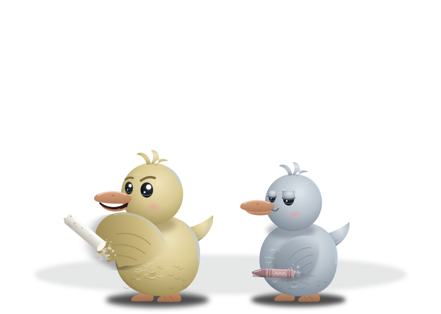
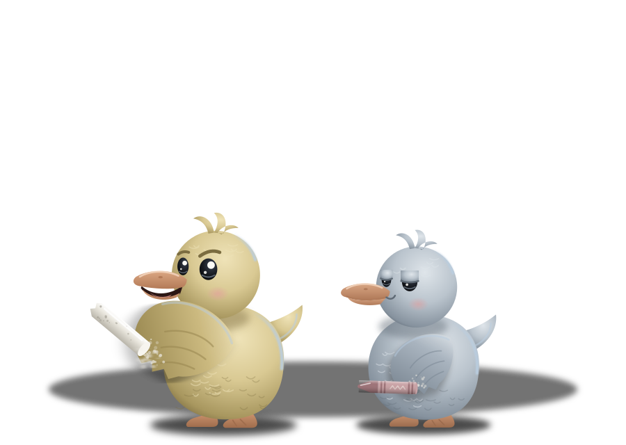

A pen that feels right
Smooth, pressure aware strokes. With a mouse or a finger, the width follows your speed.
Peer to peer whiteboard
A whiteboard for you and up to four friends. Share six words, and your strokes travel straight from browser to browser. No account, no server in the middle.


Try it
This little slate runs the same smoothing as the app: lines follow your speed, or your pen pressure. Nothing leaves this page.
How it works
You get six words and a QR code. They work once, for ten minutes.
Their screen shows six new words. They read them to you and you type them, so you know nobody is in between.
Strokes, notes and pictures appear on every screen as they happen, with a cursor and a name for each person.


Features
Smooth, pressure aware strokes. With a mouse or a finger, the width follows your speed.
Mark over anything. The eraser lifts whole strokes and shapes off the slate.
Rectangles, ellipses, lines, arrows and handwritten looking text.
Notes in five muted colors. Paste or drop a picture: it is compressed and sent to everyone.
Grab one thing or a whole area, move it, resize it, duplicate it or bring it to the front.
Undo and redo only touch your own changes, never what a friend just drew.
Pan and zoom forever. On phones, two fingers pan and pinch. Big buttons for thumbs.
Every board is saved in your browser. Export a PNG, an SVG or a board file.
Add it to your home screen. Drawing alone works without a connection.
Always the same board
Every person holds the whole board. Changes are small messages stamped with a logical clock, and every device applies them with the same rules, so two people moving the same note, or one recoloring it while the other drags it, end with the same result everywhere.
Someone who joins late receives the full board, pictures included, from whoever is already there.


Private by design
FAQ
Yes, and open source under the MIT license. There are no ads and no tracking.
Up to five on one board, you included. Each new person gets their own six words from anyone already on the board.
Each person keeps their copy in their browser. Next time, invite each other again and the boards merge back into one.
Some networks block direct connections. The app tests at start whether a public STUN server answers and explains what it finds. On strict networks you can add your own TURN server in the settings; none is built in.
Yes. Pens that report pressure get lines that thicken as you press. A mouse or a finger uses your speed instead.
Export a PNG, an SVG or a board file. Opening a board file of a board you already have merges the two.
The app speaks English and Portuguese, and picks one from your browser. You can switch in the settings.


Open the app, press Invite friends, read six words out loud.
Start drawing